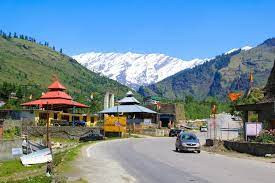
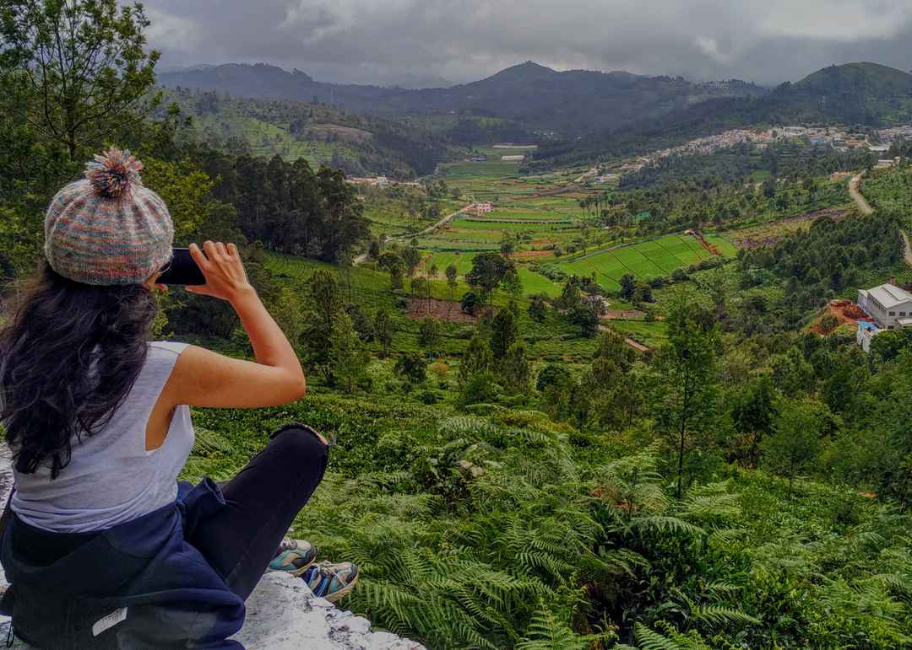
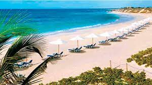
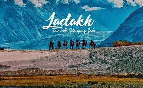

Shimla is the capital of the northern Indian state of Himachal Pradesh, in the Himalayan foothills. Once the summer capital of British India, it remains the terminus of the narrow-gauge Kalka-Shimla Railway, completed in 1903. It’s also known for the handicraft shops that line The Mall, a pedestrian avenue, as well as the Lakkar Bazaar,
manali

JManali is a high-altitude Himalayan resort town in India’s northern Himachal Pradesh state. It has a reputation as a backpacking center and honeymoon destination. Set on the Beas River, it’s a gateway for skiing in the Solang Valley and trekking in Parvati Valley. mountains, home to 4,000m-high Rohtang Pass.
Ooty

Ooty (short for Udhagamandalam) is a resort town in the Western Ghats mountains, in southern India's Tamil Nadu state. Founded as a British Raj summer resort, it retains a working steam railway line. Other reminders of its colonial past include Stone House, a 19th-century residence, and the circa-1829 St. Stephen’s Church.
Kerla
Kerala, a state on India's tropical Malabar Coast, has nearly 600km of Arabian Sea shoreline. It's known for its palm-lined beaches and backwaters, a network of canals. Inland are the Western Ghats, mountains whose slopes support tea, coffee and spice plantations as well as wildlife. National parks like Eravikulam and Periyar, plus Wayanad and other sanctuaries, are home to elephants, langur monkeys and tigers.
Goa

Goa is a state in western India with coastlines stretching along the Arabian Sea. Its long history as a Portuguese colony prior to 1961 is evident in its preserved 17th-century churches and the area’s tropical spice plantations. Goa is also known for its beaches, ranging from popular stretches at Baga and Palolem to those in laid-back fishing villages such as Agonda.
Laddak

Ladakh /ləˈdɑːk/[7] is a region administered by India as a union territory. The region constitutes a part of the larger Kashmir region, which has been the subject of dispute between India, Pakistan, and China since 1947.[8][9] It is bordered by the Tibet Autonomous Region to the east, the Indian state of Himachal Pradesh to the south, both the Indian-administered union territory of Jammu and Kashmir and the Pakistan-administered Gilgit-Baltistan to the west, and the southwest corner of Xinjiang across the Karakoram Pass in the far north. It extends from the Siachen Glacier in the Karakoram range to the north to the main Great Himalayas to the